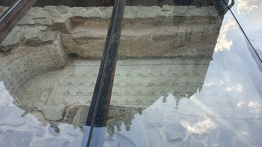
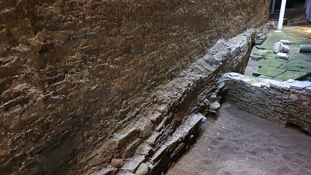
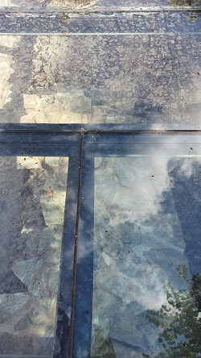

|
LUCUS AUGUSTI
LUGO |
|||||||||||||||
| La ciudad sagrada de Augusto
Paulo Fabio Máximo fundó Lucus
Augusti en el 14-13 a.e.c, sobre un campamento militar instalado en
torno al año 25 a.e.c. La ciudad sería capital del Convento Jurídico
Lucense, en el que se integraba la Gallaecia norte. La ciudad está
asentada en una meseta a 475m. altitud cercada por fosos naturales en
tres de sus lados, el río Miño al oeste y sur y los regatos Rato, Paraday
y Chanca, al este; por el norte, Lucus Augusti tuvo en su Muralla
un excelente parapeto al viento frío
septentrional. Era la capital más cercana al finisterrae romano, el
último eslabón de las fortificaciones romanas, por lo que su muralla
debería ser mucho muy sólida.
La Muralla Romana se erigió a finales del siglo III, cuando Roma comenzó a sentir la amenaza bárbara. Posiblemente es el recinto fortificado más importante y mejor conservado del mundo romano. En la Praza do Campo se localiza el Centro de Interpretación de la Muralla.
Fue construida entre los años 260-310. Mide unos 2150m. de longitud, y tiene una altura que oscila entre los 10 y 15 m. Se conservan 71 cubos, 60 de planta circular y 11 cuadrangulares de los 85 que tenía. Ocho están seccionados y cinco desaparecieron. Sobre cada cubo se alzaba un torreón de dos o tres pisos y cuatro ventanas en cada unos de ellos, pero sólo se conserva parte de uno, en la zona conocida como A Mosquera. Los materiales empleados en su construcción fundamentalmente son la pizarra y en menor medida la sillería de granito. El material de relleno es un mortero fabricado con tierra, piedra suelta y guijarros, cementado con agua. A la muralla y los torreones e accedía por escaleras de doble ala embutidas en el macizado de los cubos. Se han descubierto dieciséis escaleras de este tipo, y se supone que hay una en cada torre original romana. La ciudad tenia 12 puertas, actualmente cinco de sus diez puertas se cree que son romanas, aunque con añadidos posteriores. La existencia del foso ha podido documentarse arqueológicamente. Está separado de los cubos de la Muralla unos 5m, tiene una anchura de unos 20m y una profundidad media de 4m con respecto al suelo original.
Se han hallado varias monedas a la altura de la cimentación del monumento, entre las que destacan las acuñaciones del emperador Claudio II (268-270) y Galieno (253-266). La fecha de su terminación no esta datada, pero se cree que se erigió en un solo proyecto, y se termino a mediadosno finales del siglo IV. Lucus Augusti era la capital más cercana al finisterrae romano, el último eslabón de las fortificaciones romanas, por lo que debería ser mucho más sólida que el resto. La ciudad está asentada en una meseta cercada por fosos naturales en tres de sus lados, el río Miño al oeste y sur y los regatos Rato, Paraday y Chanca, al este y norte.
Las Termas Romanas se hallan en el
interior del edificio del actual balneario. Se
han datado en época altoimperial siglo I-II. Este conjunto es único en
toda Galicia. Los restos conservados se pueden dividir en dos núcleos:
En otras partes del balneario se localizan restos
romanos, canales y muros y destacando sobre ellos la toma de agua
original.
Ver Termas romanas Junto a la catedral lucense, se exhibe a través de una ventana arqueológica, la Piscina Romana de sta María, del siglo IV. Su existencia se sabía desde 1960 y cuya localización concreta se produjo en el 2004. Formaba parte de un edificio más amplio, probablemente unas termas romanas o un gran edificio privado. Parece claro que era de agua fría. La piscina tiene forma rectangular, con dos ábsides y conserva un escalón de acceso. Mide 3,5 x 1,80 metros y su capacidad aproximada es de 4.000 litros. No se descarta tampoco que en alguna época posterior a su construcción fuese usada como fuente pública.
 La Domus de Mitreo es un yacimiento que conserva los restos de una casa romana datada entre siglos II y III. Su extensión sobrepasaba la muralla. Se conservan los restos de las distintas estancias y algunas pinturas. Albergaba un espacio de culto al Dios Mitra con un ara votiva dedicada a este Dios por un centurión de la Legio VII Gemina encargado de la oficina de impuestos de Lucus Augusti. Cuando se construyó la muralla se "expropio" parte de la domus. Se localiza en el edificio del Vicerrectorado en la plaza Pio XII, nº 3.
En la domus se aprecia un paño original de la muralla romana.

En la Puerta del Obispo Aguirre, se hallan los vestigios de un Templo Romano, anexo al edificio del Círculo de las Artes. La Sala Porta Miñá se localiza en la Rúa do Carme y acoge una exposición permanente del Lugo romano. También a extramuros, se localiza en las cercanías de la Puerta San Pedro, el Centro Arqueológico de San Roque que acoge, in situ, los restos de una necrópolis romana de los siglos I-V. Se conservan enterramientos de incineración e inhumación y un estanque de carácter ritual vinculado con deidades orientales; Y vestigios de un horno dedicado a la producción de cerámica. El Acueducto Romano se localiza al lado de la Diputación provincial, plaza San Marcos, y se puede observar bajo la ventana arqueológica que muestra los restos de un tramo del acueducto romano del siglo I. Discurre un poco más de 2 kilómetros y fue realizado según la técnica del opus caementicium. La construcción en pizarra pertenece a una reforma posiblemente medieval, anterior a la obra realizada por el obispo Izquierdo en el siglo XVIII.
 El Puente Romano formaba parte de la vía XIX, que unía Lucus Augusti con Bracara Augusta, las dos capitales romanas de la Hispania noroccidental, junto con Asturica Augusta, pasando por Iria Flavia (Padrón). Fue destruido parcialmente con las invasiones bárbaras. Este puente fue objeto de varias reconstrucciones, en los siglos XII, XIV y XVII.
Otros restos romanos visitables a través de la ventanas arqueológicas, son el muro de la basílica romana dentro del edificio de nuevas tecnologías, el muro romano de la plaza Santo Domingo, la base de la puerta romana en la Rúa Nova, y los restos funerarios aparecidos en la vieja cárcel.
En octubre de 2023, en la calle Ramón y Cajal, en cuyo subsuelo acaban de aparecer numerosos restos de un edificio. Se han encontrado pavimentos en bastante buen estado, así como los restos del principio de un hipocausto y bastantes muros.
|